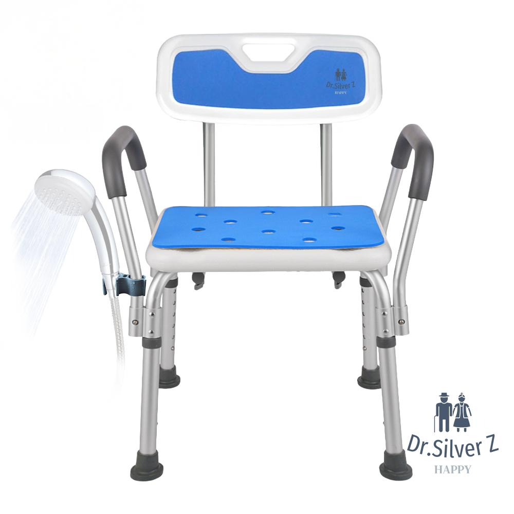
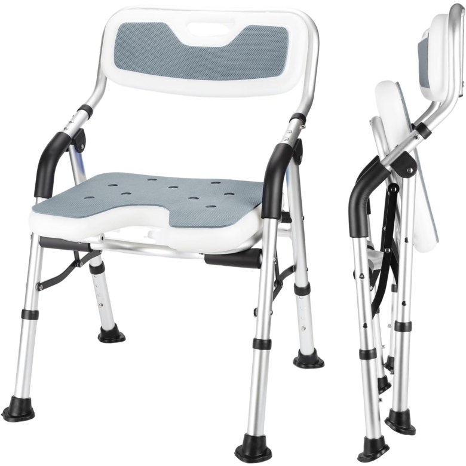
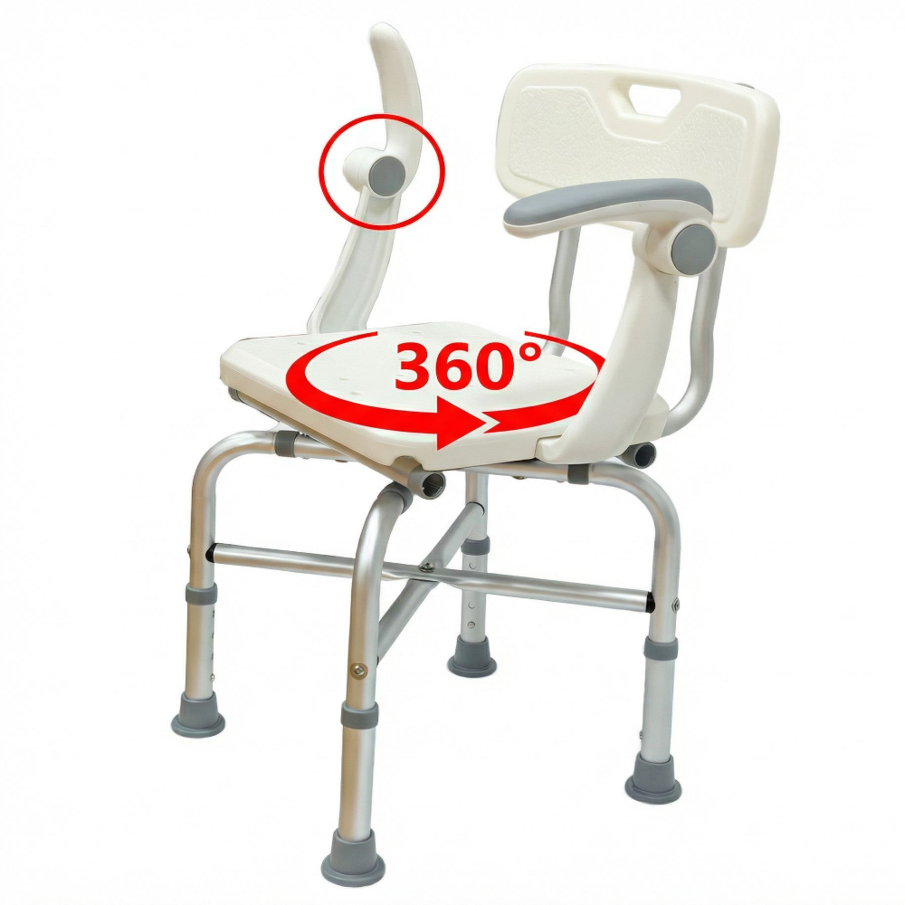

노인 목욕의자 추천 TOP 3 — 샤워체어 안전 비교
이 글에는 쿠팡 파트너스 활동의 일환으로 일정액의 수수료를 제공받는 링크가 포함되어 있습니다.
욕실은 어르신 낙상 사고가 가장 많이 일어나는 공간입니다. 목욕의자(샤워체어)는 앉아서 안전하게 씻을 수 있게 해줘 낙상 위험을 크게 줄입니다. 등받이·높이조절·미끄럼방지 기준으로 정리했습니다.
한 줄 정리
기본기 갖춘 등받이형이면 닥터실버존, 접이식 편의까지면 U자형, 안정감·마감까지 챙기려면 효안메디가 무난합니다.
추천 요양용품 TOP 3
가성비

등받이 기본형
닥터실버존 튼튼한 노인 목욕의자 등받이 높이조절
49,900원 · 쿠팡 기준(변동 가능) · 로켓배송
등받이높이조절로켓배송
이런 분께 · 기본기(등받이·높이조절)를 갖춘 의자를 찾는 경우
- 등받이가 있어 앉은 자세가 안정적
- 높이조절로 체형·욕실에 맞춤
참고 · 접이식 보관은 U자형(베스트)이 더 편합니다.
쿠팡 최저가 확인하기 →베스트

접이식 U자형
노인 접이식 목욕의자 미끄럼방지 U자형 등받이
79,200원 · 쿠팡 기준(변동 가능) · 로켓배송
접이식U자형미끄럼방지
이런 분께 · 좁은 욕실에서 접어 보관하며 쓰려는 경우
- 접이식이라 안 쓸 때 세워 보관 가능
- U자형 좌석이라 세정·뒷물이 편함
참고 · 가성비 대비 가격이 올라갑니다.
쿠팡 최저가 확인하기 →프리미엄

안정감·마감
효안메디 노인 목욕 의자 샤워 의자
119,000원 · 쿠팡 기준(변동 가능)
안정감마감노인 전용
이런 분께 · 오래 쓸 튼튼한 전용 목욕의자를 원하는 경우
- 프레임·마감이 견고해 안정감이 좋음
- 노인 전용 설계로 사용이 편함
참고 · 가격대가 높으니 사용 빈도를 보고 결정하세요.
쿠팡 최저가 확인하기 →| 구분 | 가성비(닥터실버존) | 베스트(U자형) | 프리미엄(효안메디) |
|---|---|---|---|
| 등받이 | 있음 | 있음 | 있음 |
| 접이식 | 아니오 | 접이식 | 아니오 |
| 추천 | 기본 등받이형 | 좁은 욕실·보관 | 튼튼·오래 사용 |
| 가격대 | 4만원대 | 7만원대 | 11만원대 |
목욕의자 고를 때 체크포인트
- 미끄럼방지 다리 — 젖은 바닥에서 미끄러지지 않는 고무 캡이 필수입니다.
- 등받이·팔걸이 — 앉고 일어설 때 지지가 되어 더 안전합니다.
- 높이조절 — 어르신 무릎 높이에 맞춰야 앉고 일어서기 편합니다.
- 내하중 — 체중을 여유 있게 견디는 표기(내하중)를 확인하세요.
- U자/개방형 좌석 — 앉은 채 세정·뒷물이 필요하면 편리합니다.
안전손잡이와 함께 쓰면 더 안전합니다
목욕의자에 욕실 안전손잡이와 미끄럼방지 매트를 함께 갖추면 앉고 일어서는 동작, 이동 동작에서의 낙상 위험을 더 줄일 수 있습니다. 세 가지를 함께 고려해 보세요.
목욕의자는 어떤 어르신에게 필요한가요?
오래 서 있기 힘들거나 다리 힘이 약해 욕실에서 미끄러질 위험이 있는 어르신에게 유용합니다. 앉아서 안전하게 씻을 수 있어 낙상 사고를 크게 줄입니다.
높이조절이 꼭 필요한가요?
있으면 좋습니다. 어르신의 무릎 높이에 맞춰야 앉고 일어서는 동작이 편하고 안전합니다. 대부분 제품이 다리 길이를 조절할 수 있습니다.
접이식이 더 나은가요?
욕실이 좁거나 여러 명이 함께 쓰는 화장실이라면 접이식이 편합니다. 어르신 전용으로 항상 두고 쓴다면 고정형도 무방합니다.
정리
가성비 닥터실버존(약 49,900원) · 베스트 접이식 U자형(약 79,200원) · 프리미엄 효안메디(약 119,000원). 미끄럼방지 다리와 등받이는 꼭 확인하세요.